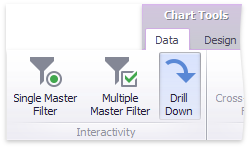

Drill-Down
The built-in drill-down capability allows you to change the detail level of data displayed in dashboard items on the fly. To learn more about drill-down concepts common to all dashboard items, see the Drill-Down topic.
When drill-down is enabled, you can click a point to view the details.

Note
When Master Filtering is enabled, you can view the details by double-clicking a point.
Drill-down requires that the Arguments section contain several dimensions, from the least to the most detailed dimension.

Note
In OLAP mode, you can perform drill-down for either a hierarchy data item or several dimension attributes. To learn more about OLAP mode, see Bind Dashboard Items to Data in OLAP mode.
To enable drill-down, click the Drill Down button in the Data Ribbon tab (or the  button if you are using the toolbar menu).
button if you are using the toolbar menu).

To return to the previous detail level (drill up), use the Drill Up ( ) button in the caption of the Scatter Chart dashboard item, or the Drill Up command in the context menu.
) button in the caption of the Scatter Chart dashboard item, or the Drill Up command in the context menu.